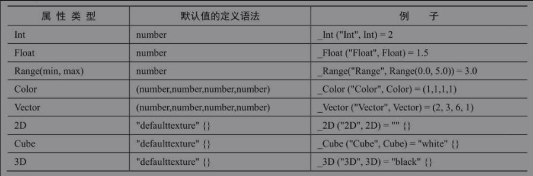
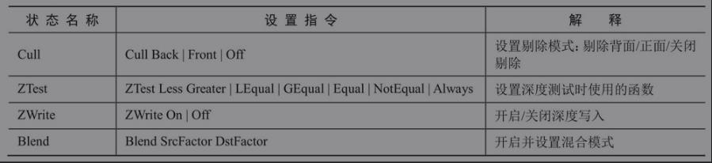
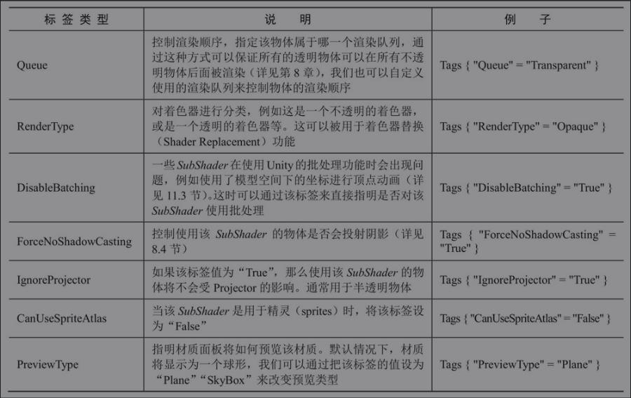
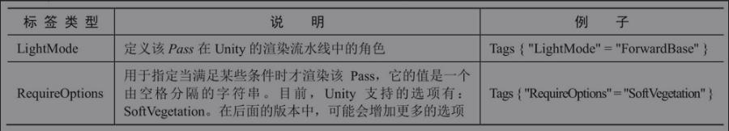

ShaderLab基础
ShaderLab基础结构
Shader "ShaderName"{ |
Unity在背后会根据使用的平台来把这些结构编译成真正的代码和Shader文件，而开发者只需要和Unity Shader打交道即可。
Properties

SubShader
每一个Unity Shader文件可以包含多个SubShader语义块，但最少要有一个。
当Unity需要加载这个Unity Shader时，Unity会扫描所有的SubShader语义块，然后选择第一个能够在目标平台上运行的SubShader。
如果都不支持的话，Unity就会使用Fallback语义指定的Unity Shader。
SubShader{ |
SubShader中定义了一系列Pass以及可选的状态（[RenderSetup]）和标签（[Tags]）设置。
每个Pass定义了一次完整的渲染流程，但如果Pass的数目过多，往往会造成渲染性能的下降。
因此，我们应尽量使用最小数目的Pass。状态和标签同样可以在Pass声明。
不同的是，SubShader中的一些标签设置是特定的。
也就是说，这些标签设置和Pass中使用的标签是不一样的。
而对于状态设置来说，其使用的语法是相同的。
但是，如果我们在SubShader进行了这些设置，那么将会用于所有的Pass。

当在SubShader块中设置了上述渲染状态时，将会应用到所有的Pass。
也可以在Pass中单独设置
SubShader的标签
Tags {"TagName1" = "value1" "TageName2" = "value2"} |

上述标签仅可以在SubShader中声明，而
不可以在Pass块中声明。
Pass语义块
Pass{ |
定义Pass的名称
Name "MyPassName" |
通过UsePass使用其他Shader中的Pass
UsePass "MyShader/MYPASSNAME" |
需要注意的是，由于Unity内部会把所有Pass的名称转换成大写字母的表示，因此，在使用UsePass命令时必须使用大写形式的名字。
Pass标签

特殊的Pass
- UsePass:
复用其他UnityShader中的Pass； - GrabPass:
该Pass负责抓取屏幕并将结果存储在一张纹理中，以用于后续的Pass处理
Fallback
当上面所有的SubShader都不能执行时，使用Fallback
Fallback "name" |
例如
Fallback "VertexLit" |
Fallback还会影响阴影的投射。在渲染阴影纹理时，Unity会在每个UnityShader中寻找一个阴影投射的Pass。
通常情况下，我们不需要自己专门实现一个Pass，这是因为Fallback使用的内置Shader中包含了这样一个通用的Pass。
因此，为每个Unity Shader正确设置Fallback是非常重要的。
Unity Shader的形式
- 着色器代码写在SubShader语义块中 ： 表面着色器的做法
- 写在Pass语义块中 ：顶点/片元着色器和固定函数着色器的做法
表面着色器
代码量少，渲染代价较大。
当给Unity提供一个表面着色器的时候，它在背后仍旧把它转换成对应的顶点/片元着色器。
它存在的价值在于，Unity为我们处理了很多光照细节
Shader "Custom/Simple Surface Shader"{ |
顶点/片元着色器
复杂，灵活性高
Shader "Custom/Simple VertexFragment Shader"{ |
固定函数着色器
老旧设备上用，只能完成非常简单的效果，Unity5.2以后固定函数着色器也会自动编译成顶点/片元着色器
Shader "Tutorial/Basic"{ |